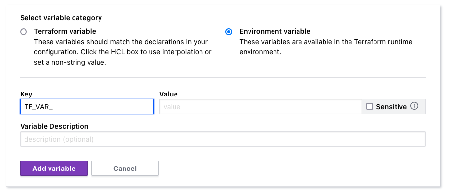

Terraform Cloud + CDKTF + Auth0
If you want my advice on how to manage Auth0 using CDKTF and Terraform Cloud, here it is: don't.
But since you're still reading, I assume you find yourself in the regrettable situation of needing to support just such a setup. Here are some little nuggets I've learned the hard way that don't seem to be documented elsewhere.
Rules, Hooks, and String Interpolation
Rules and hooks are nifty features of Auth0 that allow you to run custom Javascript code on Auth0's servers in response to various events, like when a user signs up, logs in, etc. From what I can tell, they both serve roughly the same purpose, although it seems like hooks are newer, and Auth0 would probably like to deprecate the rules feature very much. They're both unpleasant to test, just like most kinds of code that run in other people's playgrounds.
You may find yourself wanting to deploy the code for your rules and hooks using Terraform. In the setup I inherited, the CDKTF scripts, written in Typescript, read source files for rules and hooks using fs.readFileSync, and eventually insert their contents as a string into the JSON config that CDKTF synthesizes.
Terraform Cloud sometimes reports errors during the planning step that say things like the following, while pointing the finger at the value for a rule's or hook's "script" key.
A reference to a resource type must be followed by at least one attribute access, specifying the resource name.
It'll highlight some seemingly random little bit of the long and mangled string that was once your Javascript source file.
Every time I've ever seen this happen, the culprit is string interpolation in the Javascript file.
const domain = `app.${environment}.my-really-cool-app.com`;
Terraform's parser sees ${ in your string, which happens to be its string interpolation syntax as well, and falls flat on its face trying to figure out what you're trying to accomplish.
There are ways around this. According to the docs, you can escape ${ with $${.1
But are you really going to put $${ in your Javascript? Absent of this context, $${ looks like a bug! You could leave a comment explaining the extra $. But after the code is deployed, the comment will remain and the extra $ would disappear. The comment wouldn't make sense if you looked at the code form inside the Auth0 management console.
IMHO, doing this is asking for trouble. Plus it feels gross.
Worse yet, what if the name of the variable inside your interpolated string (environment in the example above) does mean something to Terraform and it replaces it with a value? The code would probably throw an error if the replaced value wasn't a variable in your script. What if it was!? In any case, the code deployed won't match the code in your repository. Good luck chasing down that bug!
The workaround I chose was to avoid template string interpolation all together and revert back to string concatenation like we did in the days before template literals were introduced.
const domain = 'app.' + environment + '.my-really-cool-app.com';
Terraform Variables vs Environment Variables
Using environment variables when writing your config with CDKTF and deploying with Terraform Cloud can be fraught, to say the least. There's at least one very good reason to use environment variables when using the Auth0 provider: they recommend it in the docs.
Let's clarify something first. Because of how CDKTF works, environment variables can be inserted in at least two stages: synthesis and planning.
If you do anything in your code using process.env to get at environment variables, this is at best confusing, at worst incorrect. This is how you'd read environment variables at synthesis time, which is probably not what you actually want. Doing this would affect what is output to your Terraform JSON when you run CDKTF's synthesis step. It essentially becomes a hard-coded value from the point of view of Terraform.
What you probably want to do, and what the Auth0 provider documentation is referring to, is environment variables at planning time.
The environment variables the docs refer to, AUTH0_DOMAIN, AUTH0_CLIENT_ID, and AUTH0_CLIENT_SECRET, are not directly accessible to your Terraform config.2 I need to set these values as secrets for one of my hooks.
The Most Correct™ Way
As I said, you can't directly access those environment variables for reasons I'll soon explain. Terraform-literate readers will already know that the Most Correct™ way to access the values would be indirectly via the resources that use them. This is The Terraform Way.
If this configuration was written in HCL, this would be comically easy. But we're using CDKTF for reasons I can't begin to explain.
You should be able to access AUTH0_DOMAIN, AUTH0_CLIENT_ID, and AUTH0_CLIENT_SECRET via Auth0Provider#domainInput, Client#clientId, and Client#clientSecret, respectively. But my config isn't written in a way that would make this easy. It would require a ton of refactoring that I don't have the time or patience for at the moment.
The Quick 'N' Hacky Way
Since I can't access those particular environment variables directly, and I'm unable to access the values indirectly via the resources that consume them, I chose to add some duplicate variables that I could access like any other variable.
The official way to get values into Terraform at planning time via environment variables is to use them in your CDKTF configuration just like any other variable (using the TerraformVariable class), and set an environment variable in Terraform Cloud with the same name but with a TF_VAR_ prefix.
That meant that for my use case, I needed both AUTH0_DOMAIN and TF_VAR_AUTH0_DOMAIN set in my Terraform Cloud variables config page,3 along with the remaining two variables mentioned earlier, using this same pattern. If I only set AUTH0_DOMAIN, the Auth0 provider will work, but the AUTH0_DOMAIN Terraform variable defaulted to an empty string! If I set TF_VAR_AUTH0_DOMAIN but not AUTH0_DOMAIN, I got the following error during the planning phase.
The argument "domain" is required, but no definition was found.
I chose to set both AUTH0_DOMAIN and TF_VAR_AUTH0_DOMAIN as environment variables in Terraform Cloud because that's ever-so-slightly less confusing IMHO than two variables, both named AUTH0_DOMAIN, one a Terraform variable and the other an environment variable. I figure someone would be more likely to erroneously delete one of the two copies in the future if both variables shared the same exact name but were different variable types. As always, notes and documentation are your best friends.
I've seen some bizarre alternative ways of escaping
${suggested on Stack Overflow, but all of my criticism still apply.↩There are ways you can expose all environment variables as Terraform variables without having to know the variables' keys beforehand, but it's not what The Architects intended. I've only seen examples of these techniques in HCL. It might be possible to accomplish in CDKTF, but you'd be fighting your chosen tools so hard that I'd question the whole endeavor. Just because you can doesn't mean you should.↩
In case you were wondering, you still need to add the
TF_VAR_prefix yourself in Terraform Cloud. That wasn't immediately clear to me. I'm guessing it's to support environment variables that don't start withTF_VAR_since providers (like Auth0 withAUTH0_DOMAIN, etc.) aren't required to conform to that pattern. ↩